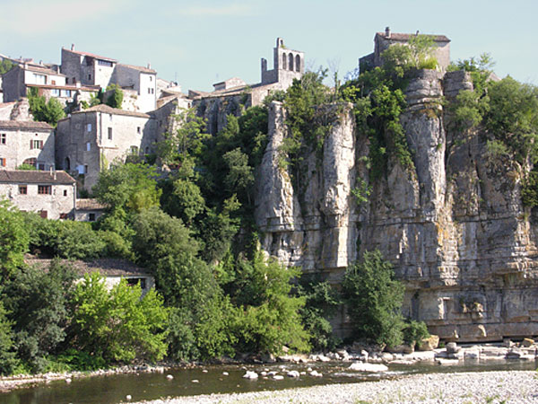

Balazuc ligt op een rots boven de rivier de Ardèche en is een van de meest fotogenieke dorpen van het departement. Het staat op de lijst van Mooiste Dorpen van Frankrijk en draagt het label 'Village de Caractère'; het betovert bezoekers met zijn geplaveide straatjes, stenen huizen die zich aan de rots vastklampen en een tijdloze sfeer. Vanaf Les Cabritas in Flaviac rijdt u ongeveer 45 minuten naar deze plek.

Een dorp dat al meer dan 50.000 jaar bewoond is
De plek Balazuc is al sinds de oudheid bewoond: in de grotten van Les Barasses, hoog in de rotswanden, lieten neanderthalers in het paleolithicum sporen van hun aanwezigheid achter. Het dorp zoals we het nu kennen ontwikkelde zich vooral in de 11e, 12e en 13e eeuw, toen Balazuc het leen was van machtige heren uit de Vivarais. De Saraceense invloed, nog zichtbaar in sommige architectonische details, geeft dit toch al opmerkelijke erfgoed een bijzonder tintje.
Wat te zien in Balazuc
Het bezoek doet u vanzelfsprekend te voet, slenterend door smalle straatjes, onder overwelfde doorgangen en langs trappen die in de rots zijn uitgehouwen. Mis de vierkante toren uit de 12e eeuw niet, overblijfsel van een oude burcht, en ook niet de kapel Saint-Nicolas-de-Lancier, het oudste gebouw van het dorp. Beneden nodigt de Ardèche uit tot een duik of een verkoelende pauze aan het water, met een prachtig uitzicht op het dorp aan zijn rotswand.
Goed om te weten voor uw bezoek
Balazuc verkent u het best te voet: de geplaveide straatjes en de vele trappen zijn niet geschikt voor kinderwagens of mensen met beperkte mobiliteit. Het dorp is klein en in een à twee uur rustig te bezoeken, zodat u het makkelijk kunt combineren met zwemmen in de rivier of een bezoek aan een naburig dorp zoals Vogüé of Ruoms. Enkele winkeltjes, cafés en een kleine kunstgalerie maken de wandeling compleet. U parkeert bij de ingang van het dorp, op een paar minuten lopen van het historische centrum. In het seizoen kunt u uw bezoek verlengen bij een barretje aan de rivier, met uw voeten in het water en uitzicht op de rotsen en de huizen die aan de rots hangen.
Praktische informatie vanuit Les Cabritas
- Afstand vanaf Flaviac: ongeveer 45 min rijden
- Afstand vanaf Saint-Alban-Auriolles: ongeveer 20 min rijden (via Ruoms)
- Beste periode: het hele jaar, vooral mooi in de lente en de herfst
- Ideaal voor: wandelen, erfgoed, fotografie, liefhebbers van oude stenen dorpen
Zin om Balazuc te ontdekken vanuit uw vakantiehuis in de Ardèche?
Les Cabritas verwelkomt u in twee vakantiehuizen met privézwembad: in Flaviac, in het hart van de Ardèche, en in Saint-Alban-Auriolles, in het hart van de Zuid-Ardèche.